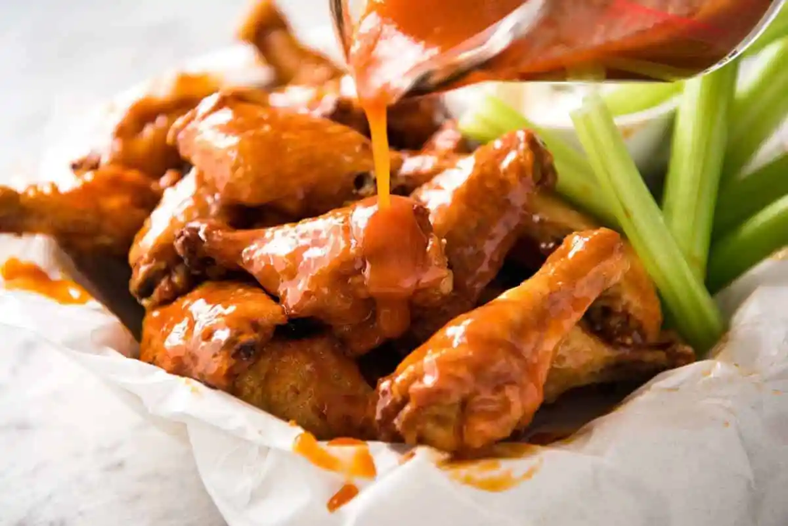

Delicious And Crispy Buffalo Wings

No false promises here – these are seriously crispy Baked Buffalo Wings
that
are made entirely in the oven! Using a now-world-famous Cooks’ Illustrated
technique, the skin is so shatteringly crispy it’s hard to believe
they aren’t fried.
Ingredients
Crispy Baked Wings
- 2kg chicken wings, wingettes & drumettes
- 5 teaspoons baking powder
- 3/4 teaspoons kosher salt / cooking salt
Sauce
- 4 tbsp (60g) unsalted butter, melted
- 1/2 cup Frank’s Original Red Hot Sauce
- 1 tbsp brown sugar
- 1/4 tsp kosher salt / cooking salt
Blue Cheese Dip
- 1/2 cup crumbled blue cheese, softened (I use gorgonzola)
- 1/2 cup sour cream
- 1/4 cup mayonnaise , preferably whole-egg
- 1 clove small garlic , minced
- 1 – 3 tbsp milk
- 2 tbsp lemon juice
- 1/2 tsp kosher salt / cooking salt
- Black pepper
Instructions
CRISPY BAKED WINGS
-
Dry overnight (optional) – If you plan ahead, lay the
wings on a rack on a rimmed baking tray and let them dry uncovered in
the fridge overnight. Alternatively, pat them dry with paper towels.
-
Preheat the oven to 250°F/120°C (all oven types). Put
one oven shelf in the lower quarter of the oven and one in the top
quarter.
-
Line the tray with foil. Put a rack on the tray then
spray the rack with oil.
-
Toss wings – Place the wings in a large bowl. Sprinkle
over baking powder and salt. Use hands to toss well (or shake in ziplock
bag) to coat wings evenly.
-
Bake 30 minutes on low temp – Place the wings skin side
up on the rack (ok if snug, they shrink). Bake on the lower shelf in the
oven for 30 minutes.
-
Bake 40 minutes on high – Move the tray up to the
higher shelf and turn the oven up to 425°F / 220°C (all oven types).
Bake for a further 40 to 50 minutes, rotating the tray halfway through.
The wings do not need to be turned over. They are ready when dark golden
brown and the skin is very crispy.
-
Toss in sauce – Transfer the wings into a large bowl.
Pour over sauce and toss to coat. (Alternatively, serve wings plain with
Buffalo Sauce for dipping).
-
Serve immediately with Blue Cheese Dip
(for both wings and celery sticks dunking) !
BUFFALO SAUCE
-
Whisk together the Sauce ingredients until the sugar is melted. Keep
warm or reheat just prior to using.
BLUE CHEESE DIP
-
Mash the blue cheese with sour cream until smooth (or to your taste).
-
Add remaining ingredients and mix well until combined, using milk to get
it to the consistency you want. Store in the fridge until required.
Remove from the fridge 15 minutes before serving.